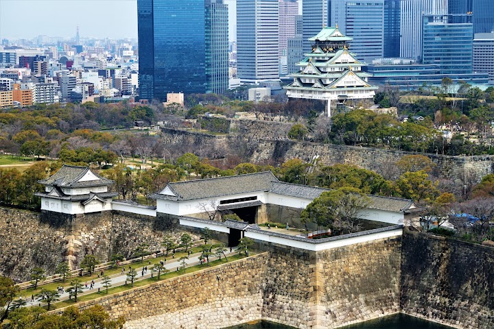
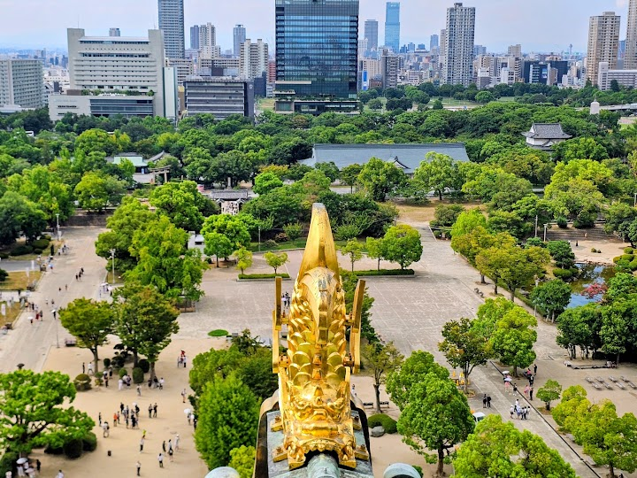
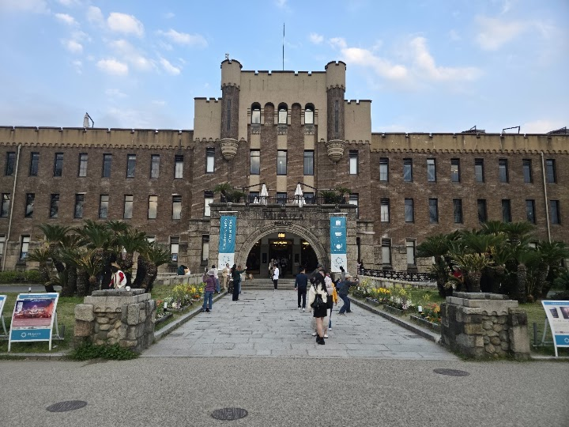
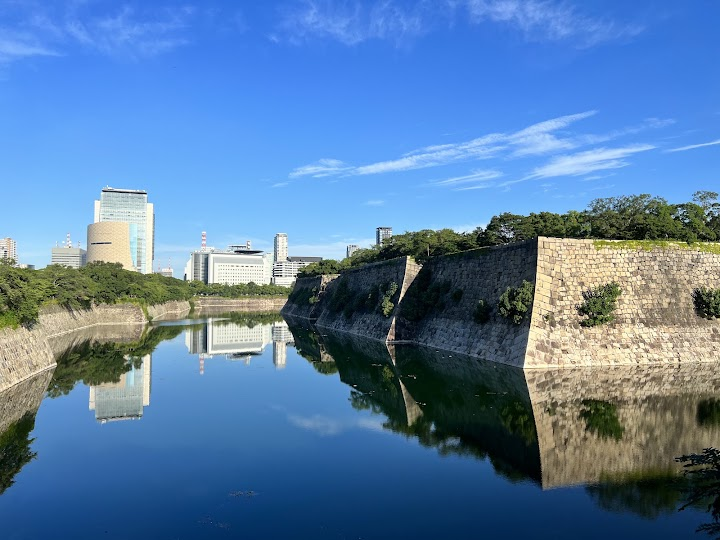
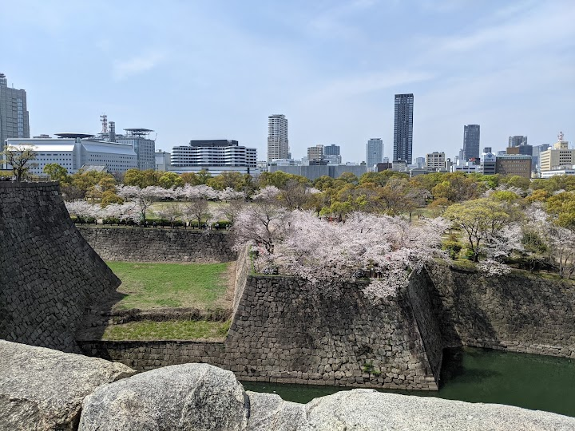

Osaka Castle
Revered castle dating to 1597 & since rebuilt, featuring gardens & a museum with varied exhibits.
Open in Google Maps (street view, more photos and reviews there)






Visitor tips on finding it and getting there
Osaka Castle is a beautiful historical landmark and a place best enjoyed without rushing. The walk from the nearby train station through Osaka Castle Park is quite long, so be prepared for some walking. However, the journey itself is enjoyable, with wide pathways, greenery, and a gradual reveal of the castle as you get closer. I visited around sunset, and that was probably the highlight of the experience. The warm evening light reflecting on the castle created a beautiful atmosphere and made the view even more memorable. For those who prefer not to walk back, there are transportation option